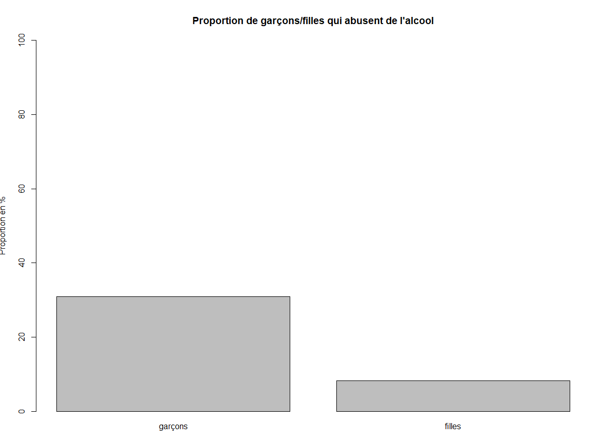

Ce document est un rapport portant sur un projet de mathématique.
L'objectif de ce projet est de déterminer si l'alcool impacte les résultats scolaires.
Dans ce rapport, nous vous présenterons dans un premier temps les membres ainsi que leur rôle dans le projet.
Nous enchaînerons avec la description du sujet et de ses finalités. Nous poursuivrons avec un descriptif des données utilisées,
pui, nous parlerons de notre méthodologie de travail suivie des résultats.
Nous terminerons par une courte conclusion.
Dans cette partie, nous allons présenter chaque membre de l'équipe ainsi que leur rôle dans ce projet.
Dans ce groupe, nous sommes 2. Nous avons travaillé ensemble afin de créer le script d'extraction de données.
De même, pour la première question, nous avons tous les deux travaillé sur la partie d'échantillonnage et de tests d'hypothèse et
nous avons tous les deux participé à la préparation de l'orale.
ALCARAZ Yannick vient d'un BTS et a fait la L3 MIAGE. Il a eu pour tâche de faire la question 2 et 3 en plus
des échantillonnages, des test d'hypothèse et à de la création des graphiques. Il a ensuite fait le Diaporama pour la soutenance.
CORBIERE Nicolas vient d'un IUT et a fait la L3 MIAGE. Il a eu pour tâche de faire la question 1 ainsi que le rapport.
Il a beaucoup contribué sur l'extraction des données et sur les tests d'hypothèse. Il a ensuite structuré l'orale pour la soutenance.
Nous allons maintenant rentrer dans le vif du sujet en vous parlant du sujet ainsi que ses finalités.
Ce projet s'intéresse à la consommation d’alcool chez les jeunes étudiants et l'impact de ceci sur leurs résultats scolaires.
Nous avons pour finalité de prouver que la consommation d'alcool a un impact négatif sur les résultats des étudiants.
Afin de pouvoir prouver notre hypothèse, nous avons utilisé une base de données sur des étudiants portugais incluant, entre autres, leur
consommation d'alcool et leur résultat scolaire. Nous avions deux bases, l'une portant sur les résultats en math et l'autre sur les
résultats en portugais. Notre première tâche fut alors de fusionner ces deux bases afin de pouvoir traiter toutes les
informations correctement. De plus, la consommation d'alcool est notée via un indice allant de 1 (pas beaucoup) a 5 (beaucoup).
Vous retrouverez ci-dessous la base de données ainsi que des informations complémentaires :
Dans cette partie, nous allons expliquer notre méthodologie de travail. Tout d'abord, nous avons
commencé à mettre en place un répertoire git afin de pouvoir facilement partager notre code.
Pour calculer la moyenne d'alcoolémie, nous avons comme donné un indice de consommation de lundi à vendredi et un indice
pour les week-ends. Nous avons alors additionné ces deux indices pour obtenir la consommation dans la semaine.
À partir de ce nouvel indice, nous avons effectué le calcul de moyennes.
Pour la création d'échantillons, nous prenons de manière aléatoire un nombre d'individus supérieur ou égal à 30 parmi la base,
comme lu en cours. Suite à cela, nous proposons des hypothèses et les vérifions grâce à des tests d'hypothèse.
Aux départs, nous avons calculé la moyenne et l'écart type des échantillons afin de calculer la valeur T à partir de ces formules :
Pour la question 1 et 2, nous effectuons des tests d'hypothèse classique :
Cependant, pour ces tests, nous avons trouvé une fonction dans R qui nous permet de facilement faire des tests d'hypothèses, il s'agit de la méthode "t.test()"
Pour la question 3, nous effectuons des tests d'hypothèse sur des proportions :
Pour ces tests, nous n'avons pas trouver de fonction pour nous aider, nous avons donc effectuer les calculs d'une manière plus classique.
Cependant, suite à nos recherches, nous avons trouvé que la formule "t.test" nous permet d'effectuer des tests d'hypothèse très rapidement. De ce fait, la méthode nous renvoi plusieurs données, notamment une p-value qui nous permet alors de rejeter notre hypothèse si cette valeur est inférieure a alpha, qui est égal a 0.05. De plus, nous avons remarqué qu'en fonction de l'échantillon, le résultat du test peut être différent, mais ceci ne pose pas tant de soucis que cela pour la validation ou l'invalidation d'une hypothèse. La question 3 étant un calcul basé sur des proportions, nous avons cherché une fonctionnaire permettant de nous faciliter le calcul de la p-value. Nous n'avons pas trouvé de méthode de ce genre et avons décidé de le faire d'une manière plus classique.
Pour finir, nous allons vous présenter les résultats que nous avons obtenus. Nous avons répondu à 3 questions et
pour chacune d'entre elles, nous avons fait des tests d'hypothèse.
Ici, nous voulons vérifier si les étudiants de niveau modeste consomment plus d'alcool que les autres étudiants.
Après avoir calculé la moyenne de consommation d'alcool journalier des étudiants avec deux parents de niveau
d'instruction modeste, nous nous retrouvons avec un indice de consommation moyen de 3,67. Nous avons ensuite calculé
la moyenne pour tous les étudiants n'ayant pas deux parents de milieu modeste et nous avons trouvé 3,79.
Nous pouvons en conclure que les étudiants de niveau moyen ne consomment pas forcément plus d'alcool.
Graphique :

Nous avons ensuite formulé deux hypothèses:
Pour cette question, nous avons pris deux échantillons de 45 personnes parmi deux types de population,
les personnes ayant deux parents de milieu modeste et personne n'ayant pas deux parents de milieu modeste.
Pour H0, nous avons obtenu un résultat égal à 0,40. Cette valeur est supérieure à alpha (0.05).
De ce fait, nous ne rejetons pas notre hypothèse H0.
Pour H1, nous avons obtenu un résultat égal à 0,01. Cette valeur est inférieure à alpha (0.05).
De ce fait, nous rejetons notre hypothèse H1.
Ici, nous voulons vérifier si les étudiants ne consommant pas beaucoup d'alcool réussissent mieux dans leurs études.
Pour ce faire, nous avons comparé les étudiants avec une consommation d'alcool journalier inférieur à 6 et
des étudiants avec une consommation d'alcool journalier supérieur à 5. Nous avons ensuite comparé la moyenne
de leur note. Au final, les personnes ne buvant pas beaucoup d'alcool ont une moyenne de 11,80 alors que les
buveurs se retrouvent avec 10,29.
Nous pouvons en conclure que les étudiants ne buvant pas beaucoup d'alcool ont de meilleurs résultats.
Graphique :

Nous avons ensuite formulé deux hypothèses:
Pour cette question, nous avons pris deux échantillons de 30 personnes parmi deux types de population, les personnes ayant un taux d'alcolémie supérieur a 6 et une population ayant un indice inférieur a 6 .
Pour H0, nous avons un résultat égal à 0,808. Cette valeur est supérieure
à alpha (0,05). De ce fait, nous ne rejetons pas notre hypothèse H0.
Pour H1, nous avons un résultat égal à -1,157. Cette valeur est inférieure
à alpha (0,05). De ce fait, nous rejetons notre hypothèse H1.
Ici, nous voulons vérifier si les étudiants consommant beaucoup plus plus d'alcool que les étudiantes.
Pour ce faire, nous avons calculé le pourcentage de garçon et de femme qui ont un indice d'alcoolémie
supérieur à 6. Nous avons trouvé que 8% des femmes abusent d'alcool contre 30% pour les hommes. Au final,
c'est bien les homme qui abusent grandement de l'alcool par rapport aux femmes.
Graphique :
Nous avons ensuite formulé deux hypothèses:
Pour cette question, nous avons pris un échantilllons de 30 hommes et un échantillons de 30 femmes.
Pour H0, nous avons un résultat égal à 1,05. Cette valeur est supérieure
à alpha (0,05). De ce fait, nous ne rejetons pas notre hypothèse H0.
Pour H1, nous avons un résultat égal à 0. Cette valeur est supérieure à alpha (0,05). De ce fait, nous ne rejetons pas notre hypothèse H0.
Nous avons un résultat égal à 0. Cette valeur est inférieure à alpha (0.05).
De ce fait, nous rejetons notre hypothèse H1. Ce résultat s'explique par le fait que très peu de femmes abusent de l'alcool.
Dans nos données, nous avons trouvé 16 femmes qui en abusent contre 54. De ce fait,
nous avons trop peu d'information pour faire des tests convaincants.
Grâce à cette étude, nous pouvons dire que le niveau d'éducation des parents ne joue pas un
rôle important dans la consommation d'alcool. De plus, les femmes consomment moins d'alcool que les hommes
et au final, l'alcool impacte de manière négative les résultats scolaires.
Cependant, il faut faire attention, cette étude se base sur très peu de données.
Nous ne pouvons donc pas en conclure qu’ils s’agissent d’une vérité globalement partager à travers le monde.